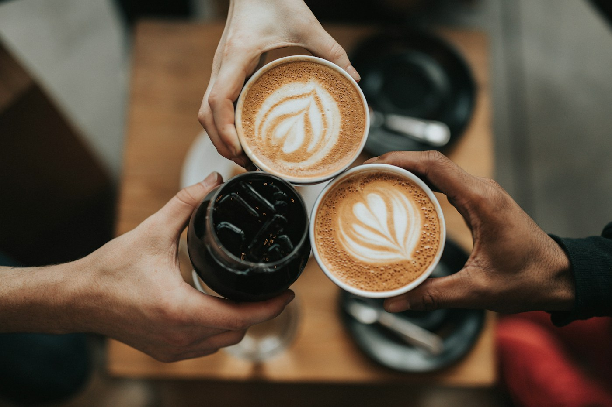

Ordinary days. Worth keeping.Keep a little
Keep a little
of life.
One photo is enough.
Give everyday moments a place to come home to.


Look back one day.
There was so much to love.
My Life.
Move to either side to turn the wheel.
Rest in the middle to stay a while.
Your story starts here.
Where the water meets the sky2026.10.25
Time Trail.
One day. So many moments worth keeping.
2026Nov 03
Scroll into your memories